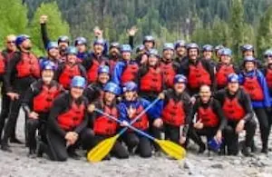

Our Mission
Our mission is to provide the best rafting experience possible! Whether you're a beginner or a seasoned pro, Dry Oars Rafting has something for everyone!

Our mission is to provide the best rafting experience possible! Whether you're a beginner or a seasoned pro, Dry Oars Rafting has something for everyone!
Since 1985, Dry Oars Rafting Co. has guided thousands of adventurers down some of the most thrilling rivers in the country. Our team of expert guides ensures that every trip is both safe and unforgettable.
Whether you're a beginner or a pro, our history is built on a passion for rafting. We take pride in curating personalized experiences, making each trip a unique adventure that leaves lasting memories.
From the sun-baked canyons of the Colorado River to the lush forests along the Arkansas River, each journey offers a unique thrill. Tackle the Gauley River's intense rapids or explore the wild beauty of Idaho's Salmon River. For a peaceful blend of calm waters and light rapids, float down the Chattooga River. Whether you seek adrenaline or relaxation, these rivers promise unforgettable adventures through stunning landscapes.